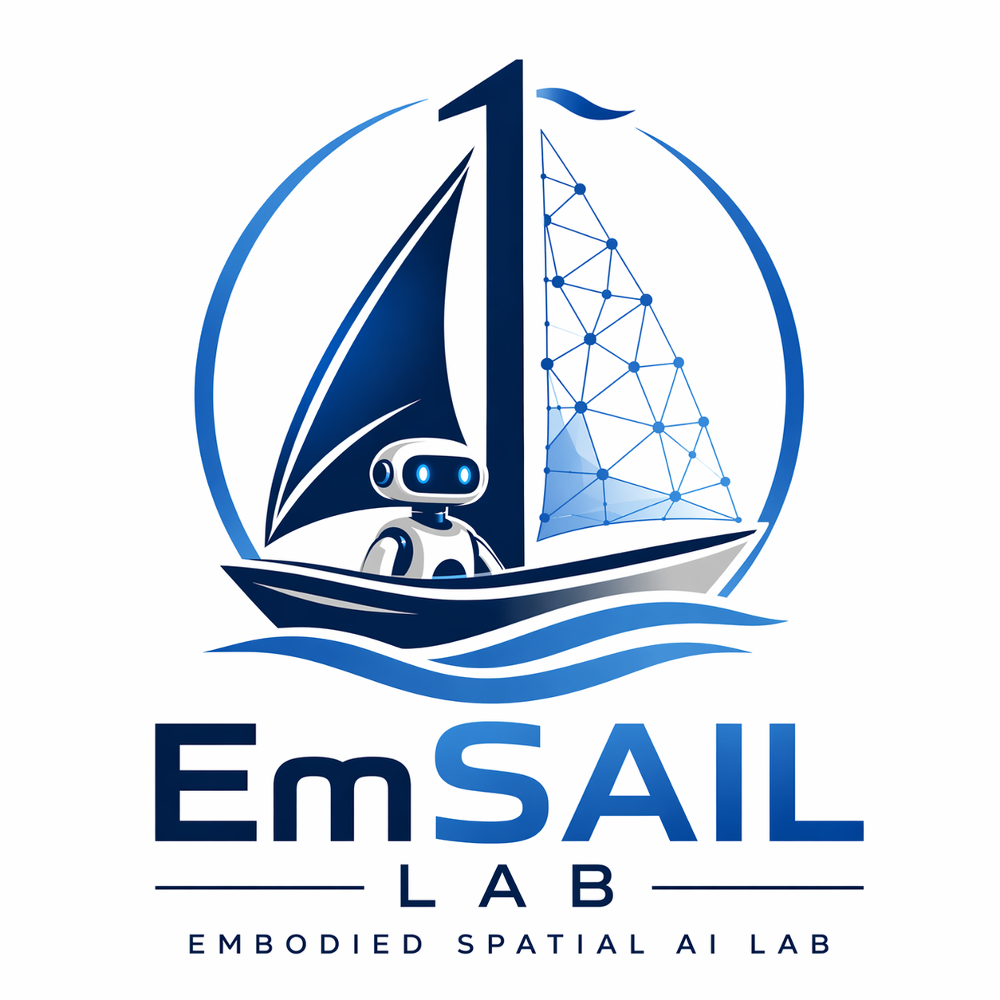

Spatial Perception & SLAM
Robust mapping, localization, and spatial understanding for real-world robotic systems.

EmSAIL LabEmbodied Spatial AI Lab
Building next-generation embodied spatial intelligence systems for robots that perceive, reason, and act in complex real-world environments.
About
EmSAIL Lab focuses on next-generation embodied spatial intelligence systems for robotics operating in complex real-world environments. Our goal is to integrate spatial perception, representation, reasoning, and action into a unified embodied intelligence pipeline.
Research
Robust mapping, localization, and spatial understanding for real-world robotic systems.
Dynamic spatial representations for embodied agents interacting with changing environments.
Efficient neural scene representations for perception, simulation, and robot learning.
Connecting perception, language grounding, and robot action through foundation models.
Learning generalizable robot skills from demonstrations, interaction, and simulation.
Predictive models that support planning, reasoning, and autonomous decision-making.
People
Principal Investigator
Director, EmSAIL LabResearch Assistant
Research Assistant
Publications
Add paper title, venue, authors, PDF, code, and project page links here.
Projects
Unified mapping and representation for embodied agents.
Vision-language-action models for general-purpose robot control.
Reliable transfer from virtual training to physical robots.
News
EmSAIL Lab website launched.
We are recruiting PhD students, MPhil students, research assistants, and interns.
Join & Collaboration
Students with strong backgrounds in robotics, computer vision, machine learning, spatial intelligence, or embedded systems are encouraged to apply.